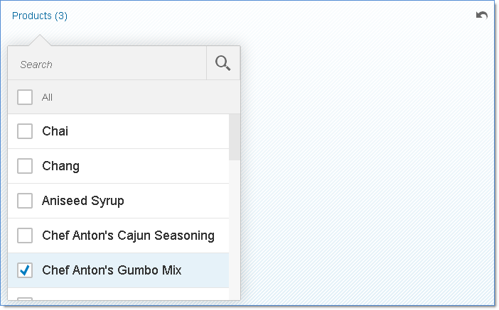

The FacetFilterList.getSelectedItems() method returns a copy of each selected facet filter item. You use the method to get the selected filter items when filtering the target data set.
Therefore, you should not attempt to modify any of the item's properties.
An application can support the personalization of settings and allow the user to save the facet filter list selections as well as other properties by means of a variant. For example, you can use getSelectedKeys to retrieve an object containing all selected items and use JSON.stringify to marshall and JSON.parse to unmarshall. After unmarshalling, you can use setSelectedKeys to apply the selections to the list. The following figure and code snippet give an example.

var oDataModel = new sap.ui.model.odata.v2.ODataModel("/uilib-sample/proxy/http/services.odata.org/V3/Northwind/Northwind.svc");
// create the FacetFilterList and bind the filter items
var oFacetFilterList = new sap.m.FacetFilterList({
title : "Products",
growing : true,
items : {
path : "/Products",
template : new sap.m.FacetFilterItem({
text : "{ProductName}",
key : "{ProductID}"
})
},
listOpen : function(oEvent) {
if(!this.hasModel()) {
this.setModel(oDataModel);
}
},
});
// getSelectionsFromVariant() is an application method to retrieve
// selected keys from the backend. Selections were saved to the variant by persisting
// the result of 'getSelectedKeys' for each list. This is an object
// containing Product keys as properties and Product text as property values, for example:
/*
{
'5' : "Chef Anton's Gumbo Mix",
'17' : "Alice Mutton",
'21' : "Sir Rodney's Scones"
}
*/
var oSelectedKeys = getSelectionsFromVariant();
// Now preselect these items
oFacetFilterList.setSelectedKeys(oSelectedKeys);
var oFacetFilter = new sap.m.FacetFilter({
lists : [ oFacetFilterList ]
});